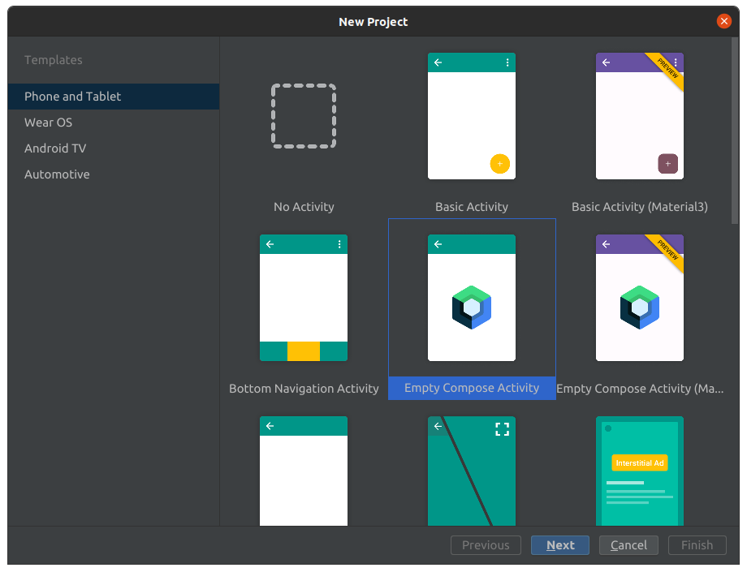
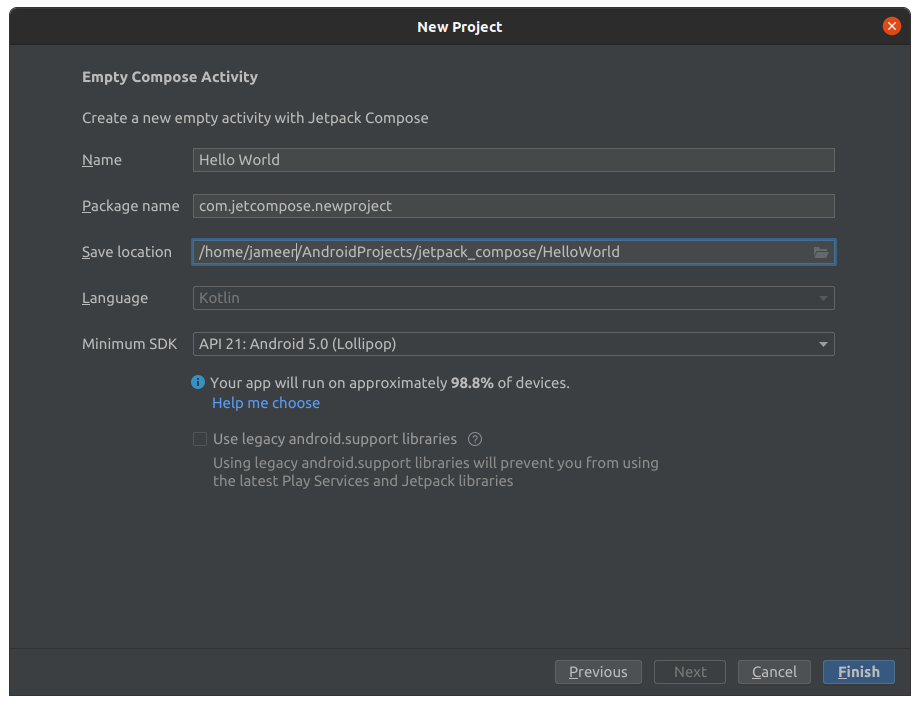

You want to create a brand new Jetpack Compose project then follow the instructions mentioned below step by step.
Step 1:
This will open new project screen.
Android Studio new project screen.
Now, you will see new screen where you need to mention your projects details carefully, these details are pretty important as this way your app will get recognised.
Android Studio new project screen details screen.
Your app name will come here, i have entered Hello World.
you need to mention unique package name here, generally package name is reversed domain name of your business or organisation, e.g com.example.helloworld you can enter anything here but it must be unique as it will be unique identifier associated to your application at OS level and upon playstore as well. this package name is helpful to install, uninstall or run many adb commands relative to your installed application in device or emulator.
select path on your computer where you want to save your project and other projects file, so that you can browse over ther later and can open it.
here by default you will see Kotlin is selected and you can not change, because compose functions are solely works with kotlin files only as of now.
Min Sdk requirement for jetpack compose is 21 and above, feel free to choose it.
Once you click on Finish, it will take a while to set up new project once it finishes you will see Android Studio with your newly set up project.
All the best! you have created a brand new Jetpack Compose Project, Happy Composing!